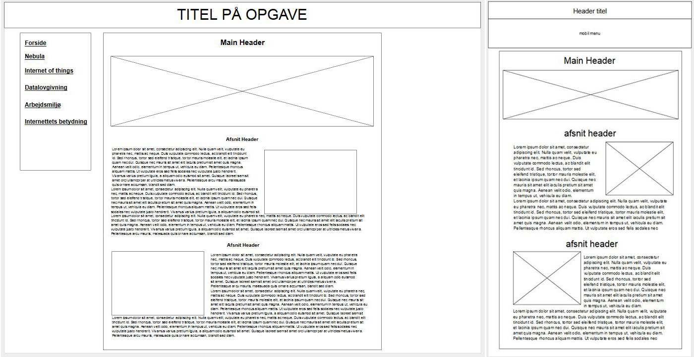
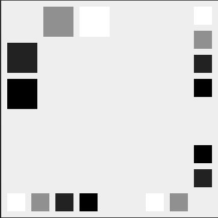
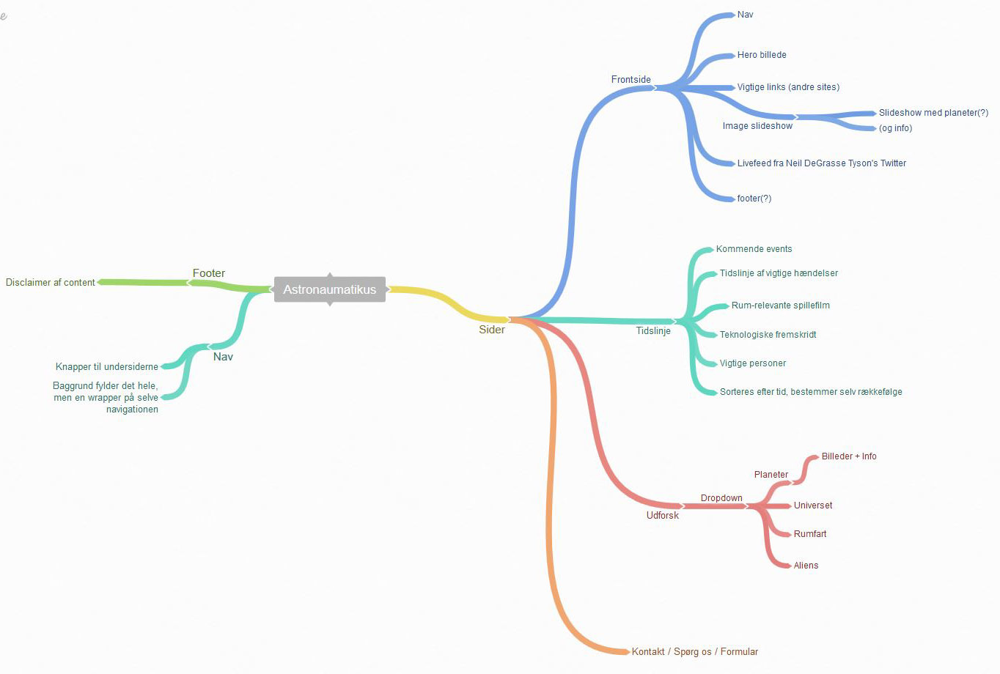
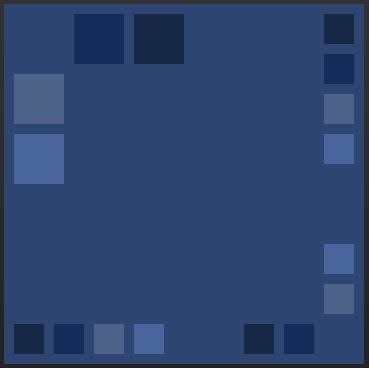
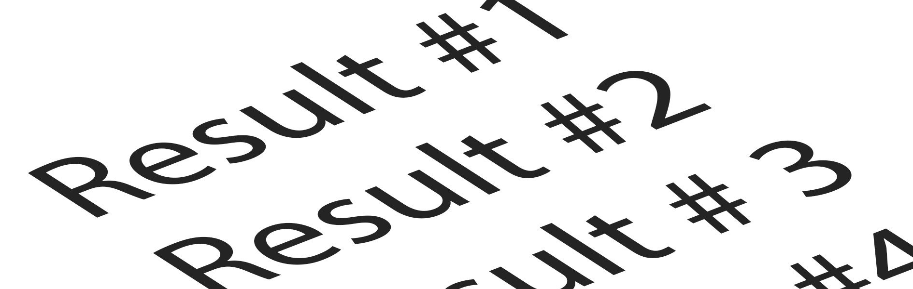

Forside

Portfolio-sitet
(Ingen tekst er endelig)
Mit portfolio-site er bygget meget simpelt op. Jeg har min menu, som ikke er links til undersider, men er Javascript, som bytter nogle elementer ud med hinanden.
Jeg mener at det er bedst at bruge, fordi det mindsker tiden for at loade nyt content på et site som det her, og mængden af plads mine filer bruger er mindre.
Jeg har mine underfaner, som er nemme at komme til, og det er nemt at læse min information på siden.
Wireframe til sitet

Mit wireframe til sitet (normal web til venstre, lille skærm/smartphone til højre) er ikke særlig advanceret. Man scroller igennem hovedblokken af indhold, mens man har en menu på venstre side til hurtigt at springe videre til andet indhold.
Smartphone-designet er lavet på samme måde i forhold til den store blok, men menuen sidder nu toppen, og er "drop-down".
Link til Moqups.com ->
Farver og tema

Efter at have siddet i lidt tid i Paletton uden at finde et farvetema som passede til mine ideer, valgte jeg at gå efter et sort/hvid tema i stedet. Jeg følte at overgangen mellem sort og hvid passede meget godt til et site hvor man skal læse meget, så det ikke bliver hårdt for øjnene.
Link til min Paletton.com ->
Nebula
Nebula-site
(Ingen tekst er endelig)
Nebula sitet blev lavet som en opgave til aflevering. Vi fik ikke andet end grupper og nogle instrukser for hvad der skulle være på sitet, og krav til metoderne vi byggede det op på.
Link til Nebula ->
Opgaven
Nebula er et site om astronomi, og er til for at oplyse folk om det ydre rum, og menneskets bedrifter på samme område. Vi blev enige i gruppen om at farverne skulle have noget med rummet at gøre, og at vi skulle have mange forskellige måder at få informationerne på.
Vi blev indelt i grupper af 4, hvor vi så skulle blive enige om et design og layout af siden. Vi skulle finde et farvetema, og lave et diagram over siden og dens funktioner. Der blev hurtigt enighed om wireframes af siden, både til computer, men også til smartphone. Det eneste vi delte ud over meninger var noget javascript til at få sidernes funktioner til at virke som vi havde planlagt.
Layout og design

Sitet er lavet med 2 websites. Det første hedder Coggle, som bruges til diagrammer, og det andet Paletton, som er et website til at finde farvekombinationer og hexadecimalerne til dem.
Sitet er lavet i Brackets, med HTML, CSS og lidt Javascript.
Vi byggede forsiden op, så den havde lidt af de andre sider på sitet. Der er relevante links til andre sites om rummet på forsiden, et slideshow af planeterne i vores solsystem og et twitterfeed af en kendt astrofysiker. På undersiderne er der en tidslinje, som man kan scrolle nedaf for at læse mere om begivenheder omkring rummet, der er en side hvor man kan få meget at vide om rummet omkring os, månerne, planeterne, solsystemerne og galakserne. Til sidst er der en side hvor man kan kontakte os der har lavet siden, og læse om hvilke genier der har lavet sitet.
Coggle-diagram af Nebula

Det program vi har brugt til diagrammet hedder Coggle, og er et "gratis" program til at lave mindmaps/diagrammer i. På vores Coggle kan man se, at vi har prøvet at bygge siderne op hver for sig, og at vi fået inkluderet en masse gode ideer, selvom vi måske ikke var helt gode nok til javascript for at føre dem ud i livet.
Link til Coggle.it ->
Nebula's farver og tema

Farverne bag Nebula er ret gennemtænkte. Blå signalerer lærdom, og at kontrollere sig. Det gør at det er nemmere at fokusere på den viden, som er på siden. Vi fandt en god blanding af "ydre-rum blå" som vi kunne bruge.
Link til Paletton.com ->
Informationssøgning
Søgemaskiner på nettet
(Ingen tekst er endelig)
Denne underside handler om søgning af informationer, hvordan søgemaskiner virker og hvordan man selv bedst muligt får sit arbejde ud på nettet.
Hvordan virker søgemaskinerne?
Søgemaskinerne bruger bestemte algoritmer til at læse de websites den finder på nettet. Bagefter uddeler den "points", som skal bruges til at vise hvor god siden er for personen der søger. Det er vigtigt for søgemaskinen at den dækker bredt, og at den tager en masse faktorer med i overvejelserne, så den bedre sikrer sig at man finder det man leder efter. På samme tid må man heller ikke kunne snyde den, ved at udnytte de ting der giver "points".
Hvordan giver Google points?
Søgemaskinen kigger på en række faktorer, og bestemmer bagefter hvor mange points du får. Det kunne være f.eks titlen på dit site, det der står i din overskrift, om du har relevante links, om andre sites linker til dig og om du bruger relevante ord i din tekst. Den holder dog også øje med snyd, så hvis du har skrevet "havebasin" 30 gange i en passage, vil den nok give dig strafpoints.
Hvordan forbedrer du din side?
1: Titel
Det første man skal tænke på er ens titel. Det er ikke kun en af de første ting søgemaskinen ser, men også kunden/den besøgende ser titlen på siden først.
2: H1 overskrift
Google kigger også på din H1 overskirft (hvis du da har en), og kigger på hvor langt oppe på dit site den står. Den ser også på om din overskrift har relevans til resten af sitet.
3: Relevante ord
Mængden af relevante ord har også stor indflydelse på din placering. Hvis du bruger ordene for lidt, giver den dig minus for ikke at være relevant, og hvis du bruger dem for meget, giver den også minus, fordi den tror du snyder den.
4: Link til og fra dit site
Google tæller mængden af links du har til andre sites. Den kigger på om de links går ud til noget der giver mening, og samtidig kigger den på andre sites, og ser om de linker til dig. Hvis de linker til dig, må dit inhold jo være noget værd. Man kan dog ikke snyde den, da nogle site har mere vægt end andre, f.eks. hvis en populær netavis linker til dog, og et 3-ugers gammelt site, men 10 daglige besøgende.
5: Billeder
Folk kan godt lide billeder, så det er meget godt at dit site har nogle af dem også. Du kan hjælpe google ved at give billed-filerne relevante navne, og ved at bruge "alt" attibuten og give dem en god tekst.
6: Link-struktur
En god navigationsbar, med semantiske tags, link og opsætning sætter google også pris på. De vil gerne have den højt på siden (meget gerne helt oppe udner loftet) og så skal den linke godt videre til undersiderne på dit website.
Ord og begreber
Der er nogle ord og begreber indenfor SEO som er gode at kende til. Her er 2 af dem:
Pagerank
Pagerank er et gammelt begreb, som sidst blev opdateret i 2013. Det er en samling af de 200+ elementer Google kigger på for at rangere sider. Google har også sider de har straffet, som derfor har 0 pagerank-points.
Pagerank er en skala fra 0 til 10, og kigger på nogle forskellige ting:
1. Antallet af links
2. Alderen på hvert link
3. Om linkene er relevante for det din side omhandler
4. Hvor linkene fysisk er placeret på den side, der linker
5. Hvordan der linkes (titlen og linkbeskrivelsen)
Pagerank er kun en lille del af det Google bruger til at placere dit website med
Søgeordsanalyse
En søgeordsanalyse skal hjælpe dig til at finde ud af hvilke ord og sætninger du skal have på dit site for at kunne rangere højere på Googles resultater. Den hjælper med at bygge dit site op, så du sikrer dig flere kunder.
Google AdWords
AdWords er en side hvor du kan få dit site i toppen af Googles resultater. Du kan lægge mange former for reklamer op på Googles netværk af apps, og få dem ud til mange forskellige brugere. Du kan lave dem tekst-baserede, grafiske, video-reklamer eller reklamer i apps
Link til AdWords ->
Datalovgivning
header
(Ingen tekst er endelig)
header
header
header
header
Arbejdsmiljø
header
(Ingen tekst er endelig)
header
header
header
header
Internettets Betydning
header
(Ingen tekst er endelig)
header
header
header
header